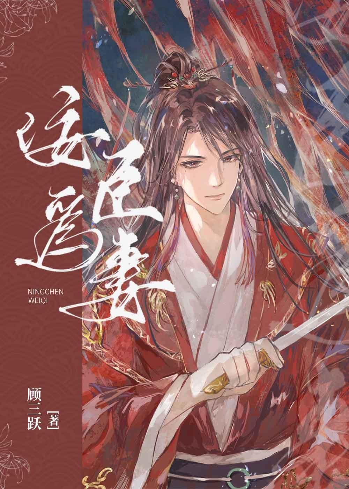

Zhao Yelan nació como un esclavo criminal y fue rescatado por el Tercer Príncipe. Tras años de arduos esfuerzos para entronizarlo, Zhao Yelan se convirtió en un ministro adulador, a quien todos detestaban, pero quien lo contrajo en matrimonio con el general Yan Mingting, la estrella solitaria de Tiansha.
El general causó la muerte de su padre, su madre, su esposa y su perro. Todos esperaban que la maldición también matara a Zhao Yelan cuanto antes.
En la noche de bodas, Zhao Yelan, que vestía de rojo, sacó una daga, con ojos afilados: "¿Qué quieres?"
Yan Mingting apretó su mano con fuerza y tomó prestada su daga para tallar un gran carácter en la cabecera de la cama: – Temprano.
"Eres débil y frágil, ¡levántate temprano todos los días y practica la postura del caballo conmigo!"
"¿?"
¡La gente común pensó que este matrimonio era realmente maravilloso!
Oyeron que a este gran ministro lo golpeaban a diario. Tenía que reparar las tejas cuando la casa tenía goteras y también trabajar en la cocina. Servía a su esposo y era muy obediente, y desde entonces no se atrevió a condenar a nadie.
Oye, ¡el general era realmente poderoso!
Zhao Yelan se sentó perezosamente junto a la cama, jugando con la daga, y levantó ligeramente las puntas de los ojos: "¿De dónde salieron estos rumores?"
—De mi boca de perro. —Yan Mingting, en postura de caballo, se palmeó el muslo—. Señora, por favor, tome el asiento de honor. No tiene que madrugar mañana.